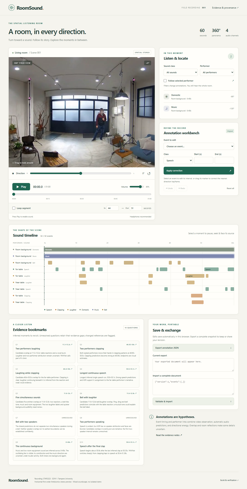
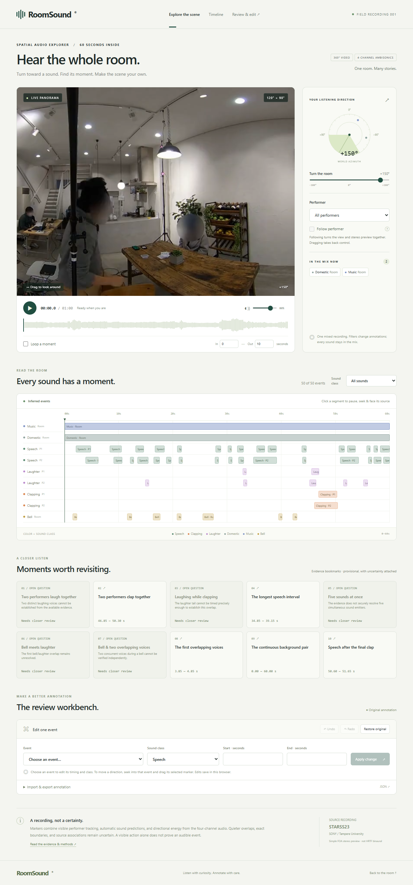
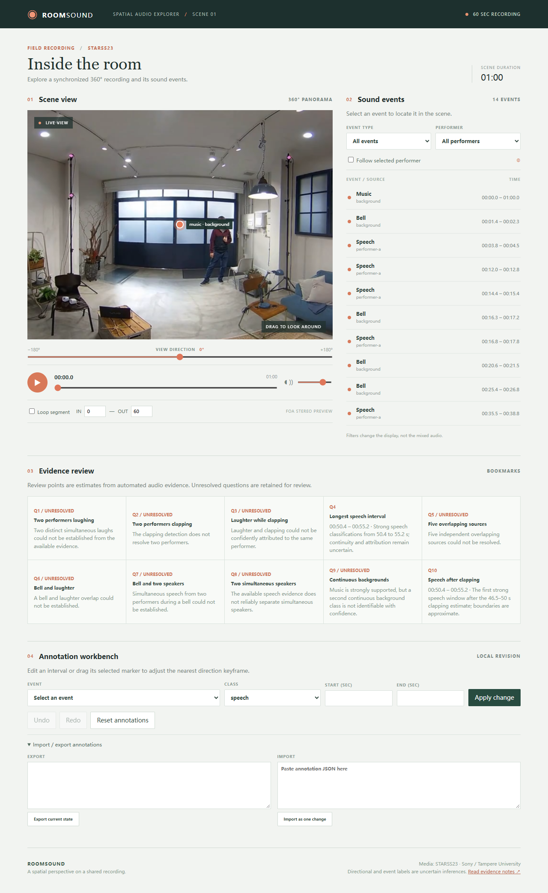
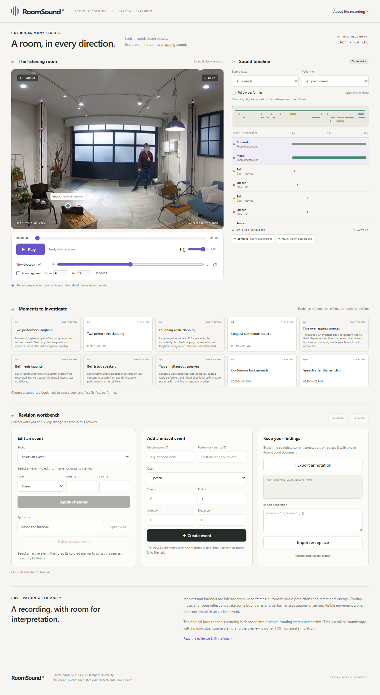
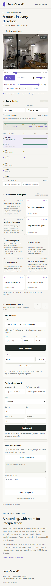

gpt-6-astra · R3
浏览器29项自测通过，声音方向、完整时段和空列表切换仍有盲区。
18条命令记录 · 6个关键节点
给 Agent 一分钟真实房间的 360° 录像，外加一份带方向信息的四通道录音。它要先弄明白“什么时候、什么声音、在哪个方向”，再做成能转头看、转头听、按声音查找片段并修订标注的网页。多个声音持续重叠，难点在事件、方向和人物归属的判断。
STARSS23 真实录音 · 非合成60 秒 · 360° 全景 + 四通道 FOA平均同时发声 3.33 个 · 峰值 5 个3 个 Codex CLI 模型 · 联网单次交付 · 空项目起步模型无原生音频输入同时发声数量按活跃声音事件统计；同一人物可以同时说话、笑或鼓掌，背景设备按标注约定共用一个代理 ID，因此这里不是同时发声的人数。
委托场景：你拿到一段开会/聚会现场的 360° 录像和同步的空间录音，想做一个比普通播放器好用的东西——能转头看四周，转头时左右耳听到的也跟着变，画面上还标出"此刻这边有人在笑、那边铃在响"，点一下就能跳到那一段。
与录像采用相同的 0–60 秒时间轴。立体声预览便于用普通耳机试听；转头听的效果由 Agent 交付的播放器实时解码实现。
四个通道保留声音方向编码；直接播放不等同题目规定的转头解码。
| 文件 | 是什么 |
|---|---|
scene.mp4 | 1920×960 等距柱状投影的 360° 视频，15fps，无声。一帧就是把房间四周摊平的一张长图，网页要自己从里面裁出"当前朝向"那一块 |
scene-foa.wav | 24kHz 四通道 一阶 Ambisonics（W,Y,Z,X）。这不是"说话一轨、铃声一轨"——四个通道共同编码整个房间的声音及其方向，里面始终是混在一起的 |
scene-mono.wav / scene-stereo.wav | 单声道和固定朝向的立体声预览，不能拿来替代规定的实时解码 |
素材来自 STARSS23（SONY／坦佩雷大学）fold4_room24_mix014 原始第 50–110 秒，只做了时间裁剪和转码，人脸由数据集作者原已模糊。
这是本案例最容易被误解的一点：被测模型没有原生音频输入。它读取共享的取证结果，结合视频帧交叉判断，也可自行编写脚本分析音频信号：
| 工具 | 给什么 | 可能的误差 |
|---|---|---|
| 语音转写 | faster-whisper 转出的文字和时间 | 没有说话人归属；会把一长段静音吞进一句话里 |
| 声音分类 | YAMNet 对 0.96 秒窗口给出的 521 类概率 | 只是"可能性"，弱声音会被盖过；类名和本题的类别体系不是一回事 |
| 方向估计 | FOA 主动声强在三个频段、每 0.5 秒的主方向 | 多个声源重叠时会把它们混成一个向量；混响会把方向带偏 |
| 视频抽帧 | 指定秒数的真实画面，可自行抽帧检查 | 看见不等于听见：画面里有人在动，不代表此刻有脚步声 |
| 交付物 | 内容 |
|---|---|
events.json | 它自己推断出来的声音目录：每个事件的类别、起止时间、所属人物、以及方向轨迹（方位角／仰角随时间变化） |
reviews.json | 十道媒体推断题的答案（下详） |
index.html 等 | 真正能用的网页：全景拖动、真实 FOA 解码、播放/拖动/循环、标记、时间线、筛选、标注修订工作台 |
evidence.md | 证据说明，要把"观察到的"和"推断的"分开写 |
网页必须按题目给定的公式做实时解码：L=0.5*(W−X·sin a+Y·cos a)，R=0.5*(W+X·sin a−Y·cos a)。筛选只影响标记和时间线，不能假装把混合录音里的其他声音分离掉——这题没有独立声轨。
光做播放器不够。题目另外问十个需要根据音视频证据回答的问题，答案是held-out 的官方标注，模型看不到：
| 问题 | 标准答案 | |
|---|---|---|
| q1 | 两个不同的人同时笑的第一个瞬间 | 16.4–16.6s |
| q2 | 两个不同的人同时鼓掌的第一段 | 46.9–50.3s |
| q3 | 同一个人一边鼓掌一边笑的第一段 | 45.7–48.8s |
| q4 | 全片最长的一段连续说话 | 7.1–15.0s |
| q5 | 第一次至少五个声源同时响着的区间 | 11.2–15.0s |
| q6 | 铃声与笑声重叠的第一段 | 12.4–16.1s |
| q7 | 铃声与另外两人同时说话重叠的第一段 | 11.2–12.4s |
| q8 | 两个不同的人同时说话的第一个瞬间 | 3.5–3.8s |
| q9 | 两个贯穿全片的背景声同时在响的区间 | 0–60s |
| q10 | 最后一次鼓掌结束之后的第一段说话 | 54.0–55.1s |
判定条件：区间与真值的 IoU ≥ 0.5 或两端都落在 ±0.2 秒内，同时人物归属（匿名一对一映射，不看 ID 字面）和类别都要对，引用的事件也要真的支撑这个答案。答不出来可以写 unresolved 并说明理由——这叫诚实，但不得分。
| 桶 | 权重 | 怎么算 |
|---|---|---|
| 类别时序 F1 | 12 | 每 100ms 判断哪些类别正在发声，宏平均——每类等权，漏掉或虚报稀有类别都明显扣分 |
| 类别＋方向 F1 | 12 | 每 100ms 对活跃预测与真值做一对一最大匹配，类别相同且三维球面角误差 ≤25° 才算匹配 |
| 分段不变覆盖度 | 8 | 按真值事件算召回＋按时长加权算精确率。合理地拆分一段不扣分，虚假地把两段连成一段、重复报同一个源才扣 |
| 跨活动人物 IDF1 | 8 | 同一个人的说话、笑、鼓掌要归到同一个人物轨；用最优匿名一对一映射评，不要求 ID 字面相同 |
| 十道推断题 | 10 | 每题 1 分 |
| 基础播放器 | 22 | 浏览器实测：全景投影与拖动、标记几何与隐藏、事件导航、筛选、播放/拖动/循环、真实 PCM 解码、音画同步、响应式 |
| 人物筛选 ＋ Follow | 5 | 选中某人并开启跟随后，视角要跟着他当前活动的方向走，跨 ±180° 接缝也要对 |
| 书签导航 | 3 | 点一条书签要暂停、跳到中点、转向对应人物 |
| 标注修订工作台 | 18 | 字段编辑与校验、拖动标记改轨迹关键帧、原子撤销重做、派生视图与书签失效、导入导出与刷新持久化 |
| 证据与可用性审查 | 2 | 有据可溯、推断校准、桌面与手机可用性，各 0.5 |
音频验收会换入已知的四通道探针信号，实测不同朝向下各频点的真实幅度——不是看代码里有没有 yaw 变量，也不只看左右响度比。
三次均使用 Codex CLI 0.166.0-alpha.5.1、NJU Link，显式设置 xhigh，从独立空项目正常完成交付。使用相同素材、共享感知缓存，统一复核为内容 v3 和 driver-v4。
| 模型 | 推理强度 | 总分 | 内容 /50 | 实现 /48 | 审查 /2 |
|---|---|---|---|---|---|
| gpt-6-astra | xhigh | 72.81 | 23.55 | 47.76 | 1.5 |
| gpt-6.1-sol | xhigh | 74.12 | 24.62 | 48.00 | 1.5 |
| gpt-6.1-terra | xhigh | 57.52 | 8.02 | 48.00 | 1.5 |
Astra 在合法空导入的复核中暴露状态异常，实现为 47.76/48；Sol、Terra 的实现为 48/48。主要分差仍来自声音事件推断。参考解的确定性部分为 98/98。
| 模型 | 类别时序 F1 | 类别＋方向 F1 | 分段覆盖 | 人物 IDF1 | 书签 |
|---|---|---|---|---|---|
| gpt-6-astra | 0.689 | 0.461 | 0.408 | 0.434 | 3/10 |
| gpt-6.1-sol | 0.703 | 0.497 | 0.539 | 0.488 | 2/10 |
| gpt-6.1-terra | 0.395 | 0.104 | 0.196 | 0.059 | 0/10 |



三次Shell联网已验证，可使用文件编辑、图片、依赖安装和浏览器工具；没有原生音频输入或额外回合／工具／截图次数上限。复核发现原浏览器助手曾拦截外站请求，现已移除并验证浏览器HTTPS200；R4使用修复后的助手。
先阅读每次运行的过程总结，再按需查看关键节点或完整记录。点击编号可直接定位原命令与输出。
浏览器29项自测通过，声音方向、完整时段和空列表切换仍有盲区。
18条命令记录 · 6个关键节点
追加YAMNet与方向分析，产品实现接近完整，声音边界与人物归属仍失分。
35条命令记录 · 8个关键节点
修好了标记拖动与播放器，最终声音目录仍只有四类。
25条命令记录 · 6个关键节点
这些是对执行过程的整理；模型自测与组织者正式验收分别标注，不把工具调用次数当作推理质量。
R3主比较中，Astra、Sol、Terra的实现分分别为47.76/48、48/48、48/48，内容分却只有23.55/50、24.62/50、8.02/50。Terra确实在浏览器验证了四通道解码及非零输出；低内容分不能解释成播放器没有声音。
Terra修复了被折叠区遮住的导入入口（#24）和每帧重建标记导致的拖动不稳定（#29），仍只标出四类声音。工程修复与感知推断是两条需要分别验收的链。R3完整分项。
Sol交付50个声音事件，两类贯穿全片的背景声时序F1均为1.00；但铃声只累计7.55秒、笑声5.95秒，参考分别19.4秒和13.1秒。更多切段没有自动补足事件边界，人物IDF1仍只有0.488。
可见轨迹中它追加通用分类器、方向信号分析及细化脚本（#20、#25），所以不能称为只读取共享缓存。也没有工具消融，不能把Sol相对其他模型的差距单独归因YAMNet。上述时长按人物事件求和，重叠可重复计时。
Astra书签答对3/10、弃答2/10；Sol答对2/10、弃答5/10。Astra在书签任务上多答对一道，但音乐方位为−135°，参考为+45°，相差180°；类别＋方向F1为0.461，低于Sol的0.497。
书签是少数特定问题，完整目录还要求时段、方向与人物连续对应。不能只挑书签数或事件总数判断整体感知质量，也不能由一次运行推断更积极作答必然有利。
Astra记录29项浏览器自测通过（#23、#24），组织者随后在原始有活跃事件场景导入合法空列表，发现旧活跃视图残留、轨迹访问异常和空状态未正确持久化。
这个反例检验的是旧状态能否被清除，而非一般的导入按钮能否调用。它说明状态变化前后的组合比单个控件更能暴露边界缺陷。R4是独立的需求迭代验证，仍与这里的R3三模型主比较分开展示，不把分差全归因新增需求。
Astra 交付 32 个事件，覆盖六类声音；答对 q2、q3、q9，共 3/10 道书签，两道主动弃答。它正确保留两类贯穿全片的背景声，但把音乐方向标为 −135°，金标为 +45°。语音事件合计 19.4 秒，金标为 38.1 秒。其类别＋方向 F1 为 0.461，人物 IDF1 为 0.434，说明书签答案和完整声音目录需要分别评估。
Sol 交付 50 个事件，覆盖全部六类金标声音；两个连续背景声的类别时序 F1 都是 1.00。它答对两人鼓掌和连续背景声两道书签，五道主动弃答。但类别＋方向 F1 为 0.497，人物 IDF1 为 0.488。铃声只标出 7.55 秒、笑声 5.95 秒，金标分别为 19.4 和 13.1 秒；语音报了 45.05 秒，金标合计 38.1 秒。
Terra 交付 14 个事件，仅标出 music、speech、bell、clapping 四类，漏掉 domestic 和 laughter，只建立一个人物轨加背景代理。类别＋方向 F1 为 0.104，人物 IDF1 为 0.059；书签 0/10，八道主动弃答。
Astra实现为47.76/48：在有活跃事件的原始交付场景中导入合法空列表，旧的活跃事件视图未清理，出现轨迹访问异常，且空状态未正确持久化。Sol、Terra实现均为48/48。三次审查均为1.5/2：证据溯源、推断校准和手机可用性通过；桌面首屏的播放／进度控件位于大画面下方，各失去半分。
上述时长按人物事件相加，允许重叠重复计时。每个模型各一次有效运行，尚未估计重复采样方差。
声音目录会漏标、误报或把两段声音连成一段。R4 在修订工作台中增加直接补录事件、删除误报、拆分错误长段的操作，并要求保留方向轨迹、原子撤销重做、书签失效、筛选和持久化一致。
素材、感知工具及 50/48/2 总权重保持不变；五个工作台分组内，原功能与新增修订检查各占一半。这是独立题目版本，下面的单次验证与上面的 R3 三模型比较分别记录。
| 任务 | 模型 | 总分 | 内容 /50 | 实现 /48 | 审查 /2 |
|---|---|---|---|---|---|
| R4 修订工作台 | gpt-6.1-sol · Codex xhigh | 77.08 | 27.08 | 48.00 | 2.0 |
参考解确定性 98/98；新增操作的 37/37 项检查通过，两个故障反例分别在撤销历史与拆分轨迹上失分。Sol 同样通过全部修订检查，正常完成于约 37 分 33 秒，Shell 与浏览器联网均在实际沙箱内验证 HTTPS200。
这组新需求有实际用途，但这次没有难住 Sol。它的方向与人物归属推断更准，首屏播放控件也更易找到，内容和审查得分均提高；不能把总分差单独归因于任务变化。当前不为降低成绩继续叠加要求。


R4 题面 · 完整评分 · 原始前端交付 · 证据说明 · 运行设置 · 轨迹审计 · 反例校准 · 检查数量更正。每个任务版本仅一次有效采样；没有重复采样方差估计。
模型名为服务提供的请求别名，身份和网关内部实际推理强度未独立认证。内容根据官方标注评估；边界未做独立人工重标。素材源于 STARSS23，裁取原片第 50–110 秒。每个模型各一次有效运行。